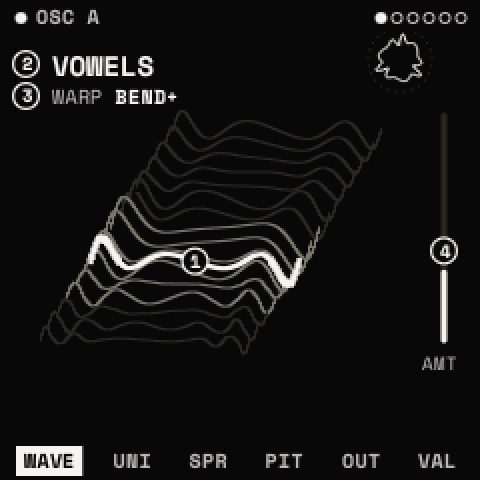
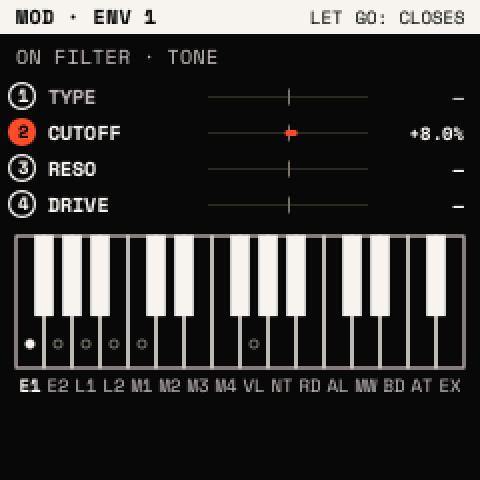

The panel
How Strata uses the FM-1's controls and screen, and the rules every menu follows. The cheat sheet lists every button in one table.
The controls
| Control | What it does |
|---|---|
| Keys (F3 to G5) | Play the selected track. On some screens they choose, launch or type instead. |
| OCT− OCT+ | Change the keys' octave (−3 to +3). Held with a menu button, they mean off and on. |
| KNOB 1–4 | Set the four values on the screen, left to right. |
| SELECT | Go to the next or previous module of the menu (EDIT: OSC A, OSC B, SUB, NOISE, FILTER, MATRIX). |
| ALGORITHM | Go to the next or previous page of the module. |
| PRESETS | Open the presets list (on looper pages: choose the track; on a drum track: choose the drum). |
| MASTER | Output level. |
The FM-1's keys have no velocity; they play at SCL's VELOCITY (100).
The screen

- Top line: the module's name, with a filled dot when it is on. The dots at the right are the menu's modules; SELECT moves between them.
- Body: a drawing of what the module does. The circled numbers are the knobs' handles, placed on what each knob moves. A knob's handle and value turn vermilion while it turns; the shape before the turn stays dashed behind.
- Bottom row: the module's pages; the one shown is highlighted. The last page, VALUES, shows the same knobs as large numbers, and turns them in the finest steps: use it to set an exact value.
- P in a square: what PRESETS chooses on this page.
- Vermilion dot after a name: the sound or kit has unsaved changes.
A module that is switched off says so on its pages ("OSC B IS OFF · EDIT + OCT+ TURNS IT ON").
Knobs
- Turned slowly, a knob moves its value in fine steps; turned quickly, in large ones. SETTINGS > PANEL > ACCEL off makes every step the same size.
- Knobs with a centre (PAN, TUNE, bipolar amounts) pause at the centre for a few detents, so you can find it.
Buttons
- Once: opens the menu on the page you left. Pressed inside its own menu: goes to its first page.
- Twice (within 300 ms): its second job, such as EDIT twice for the wavetable list.
- Held: opens its layer until you let go.
- With OCT+ / OCT−: hold the button, then press OCT+ to switch on or add, OCT− to switch off or remove.
- With OCT− held 5 s: resets what the menu shows. A countdown appears after 2 s; let go of OCT− to cancel. Sound changes can be undone afterwards with SAVE + OCT−.
Help: hold HOME to see what every control does on the current screen.
Layers
Hold a button to open its layer; let go to close it. REC's and GLO's layers can stay open: press the button with OCT+ (GLO also: twice), and tap the button to close.

| Layer | Hold | Knobs | Keys |
|---|---|---|---|
| MOD | REC | Set the chosen source's depth on each knob's parameter | White keys choose the source |
| PERFORM | GLO | Pitch bend, mod wheel, GLIDE, VOLUME | Play |
| MACROS | FX | MACRO 1–4 | F3–F4 bypass effects 1–8 |
| MOMENTARY | LFO | Change the page's values until you let go | Play |
| LAUNCH PAD | SEQ | Launch clips and scenes, mute tracks |
Details: MOD, PERFORM, MACROS, MOMENTARY, the launch pad.
Windows and lists
Windows open over the page; the keys still play. Any other button, SELECT or PRESETS closes a window.
| Window | Opens with | Use |
|---|---|---|
| Assign window | ENV or LFO twice | Put a source onto a knob (how) |
| SAVE window | SAVE | SAVE, SAVE AS NEW or CANCEL: OCT−/OCT+ choose, SAVE confirms |
| Questions (DELETE?, T1: DRUMS?, WIPE?) | an action that removes something | Confirm as the window says; anything else cancels |
Lists (presets, wavetables, drum presets, kits, projects) all work the same way: turn PRESETS to move, press SAVE twice to load, SAVE + OCT+ to save a new entry, SAVE + OCT− to delete (it asks first). A list closes after 5 seconds untouched.
Power-on
Strata shows its splash for two seconds, then HOME, with the sound, settings and project you had. Hold HOME while switching on to start without the last sound. After a crash Strata does this by itself and shows SAFE START.